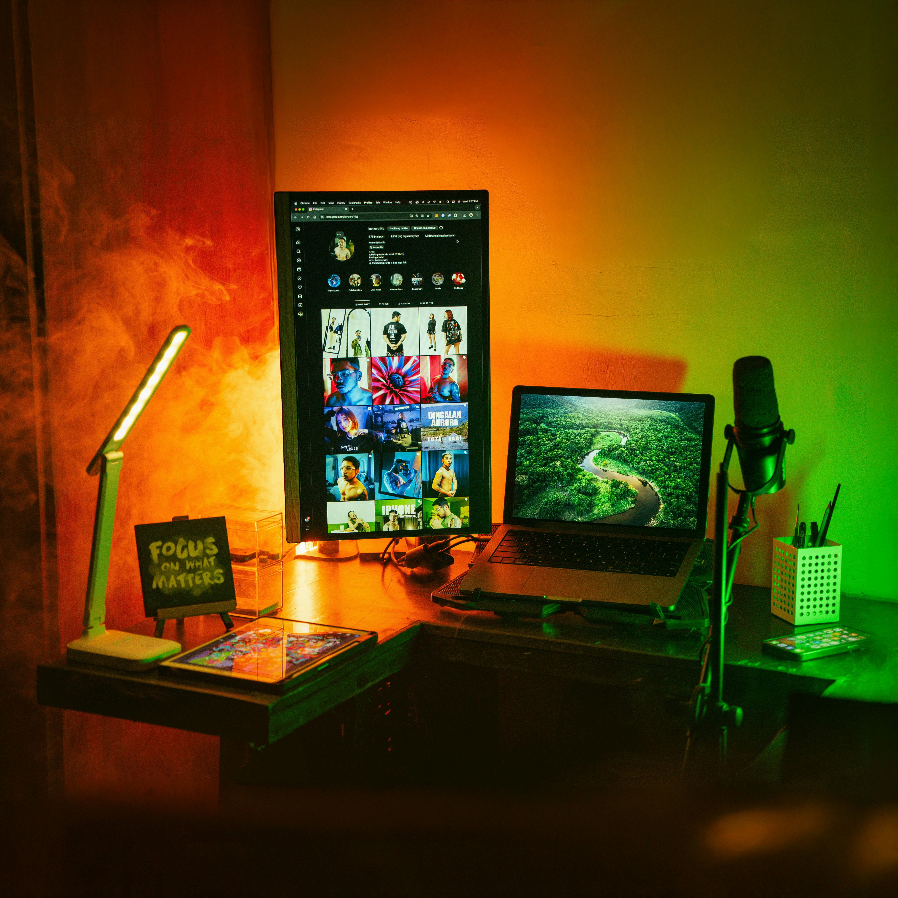

Minimalism is more than a design choice; it's a lifestyle that can bring clarity, focus, and joy into your life. In this post, we explore practical ways to integrate minimalism into your daily routine.
Declutter Your Space
Start with your physical environment. Keep only what you use and love, and let go of the rest.
Simplify Your Digital Life
Unsubscribe from unnecessary emails, organize your files, and limit time on distracting apps.
Focus on What Matters
Identify your priorities and spend time on what truly aligns with your values.